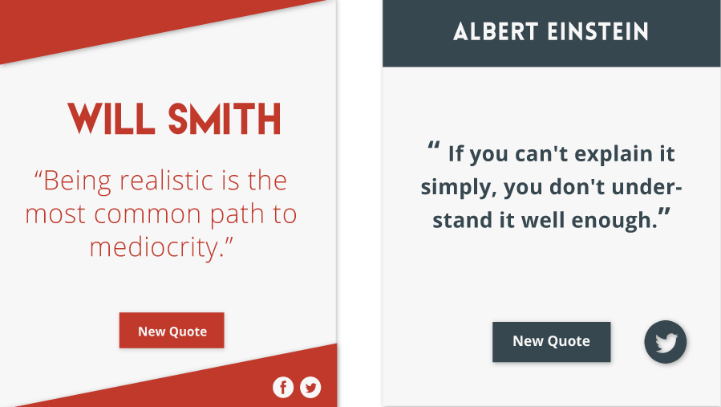

Random Quote Generator
Project Description
Click through a collection of quotes. Each quote is chosen randomly from a larger pool. No single quote will be chosen twice except after all the quotes have already been chosen.
Used
Angular(most basic form), Grunt, Sass, jQuery
Design

I really enjoyed the simplicity in designing this project. There was only a single screen to design for and I could quickly create multiple variations to choose from. ¬I did zero design for a mobile screen size. The only mockups I generated were based on my personal monitor. At the time I understood mobile was important but I didn’t understand media queries. It’s funny looking back.
Here are some of the alternate center components I made for the app. The portrait layout I considered would have been ideal for a mobile design. Unfortunately, they were merely intended to sit on top of a full width background for medium to large screens.

Challenges
As the second project I ever built, this was an extremely straight forward project. The only challenge presented was randomly selecting from a pool and ensuring all items have been chosen before an item can be picked twice. I used Math. Random and a reduce function to achieve such functionality.